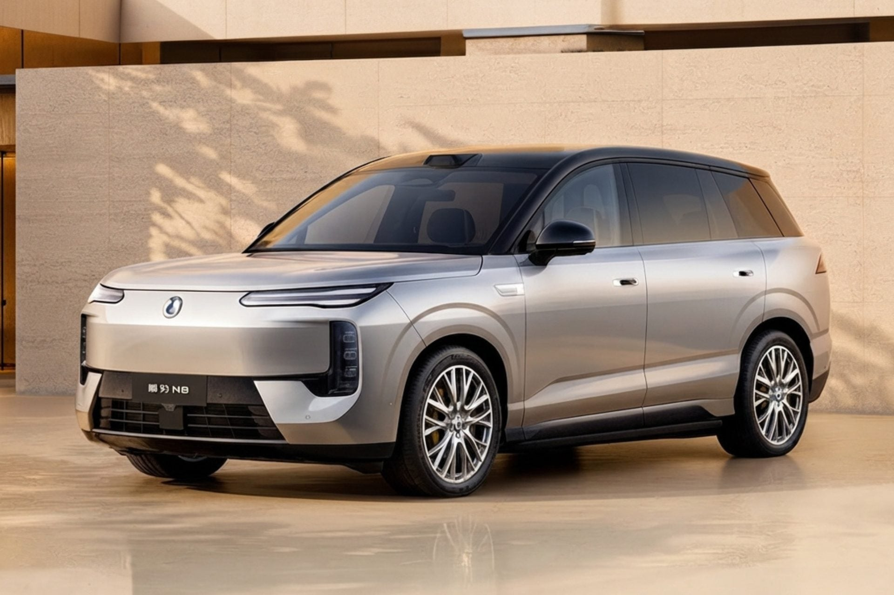

1 000 km d’autonomie et recharge en 5 minutes : BYD au sommet avec son nouveau SUV électrique

🔥 Top produits tech du moment
Publicité — Liens de partenariat Amazon : une commission peut être reversée, sans surcoût pour vous.
L'actualité tech ne cesse d'évoluer. Nouveaux produits, acquisitions, découvertes : chaque jour apporte son lot d'informations importantes pour comprendre le monde numérique de demain.
Ce qu'il faut retenir
BYD pourrait exploser tous les records avec le Denza N8, son nouveau SUV électrique haut de gamme.
Avec plus de 1 000 km d’autonomie et une recharge bouclée en 5 minutes, sa fiche technique est effectivement bluffante.
Pourquoi c'est important
Cette information pourrait avoir des répercussions sur tout le secteur technologique. Elle concerne directement les utilisateurs de technologies numériques et mérite d'être suivie de près dans les prochaines semaines. 1 000 km d’autonomie et recharge en 5 minutes : BYD au sommet avec son nouveau SUV électrique est ainsi un signal à prendre en compte pour comprendre les évolutions du secteur.
En résumé
Retenez l'essentiel : 1 000 km d’autonomie et recharge en 5 minutes : BYD au sommet avec son nouveau SUV électrique. Cette actualité a été rapportée par 01net. Nous continuerons de suivre ce sujet et de vous tenir informés des prochaines évolutions.
🚀 Vous êtes freelance tech ?
Calculez votre TJM en 30 secondes : micro-entreprise, SASU, EURL ou portage salarial. Gratuit, taux 2025.
Calculer mon TJM →Source : 01net